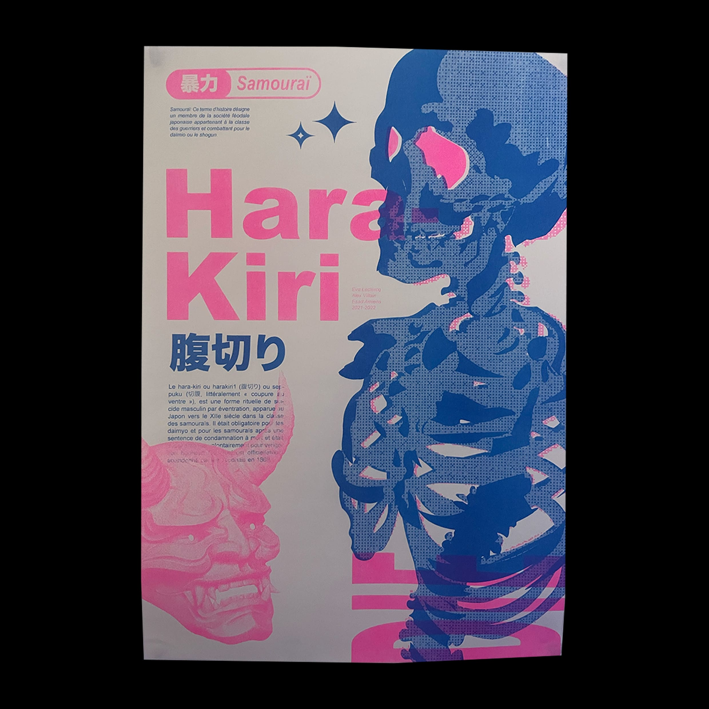
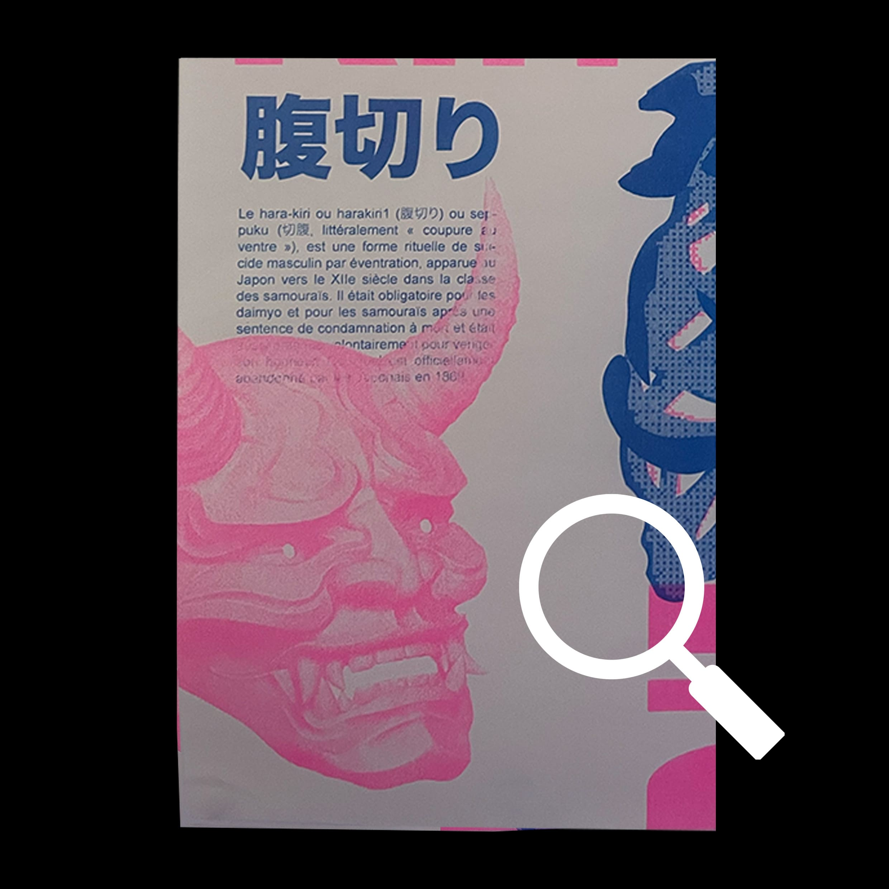
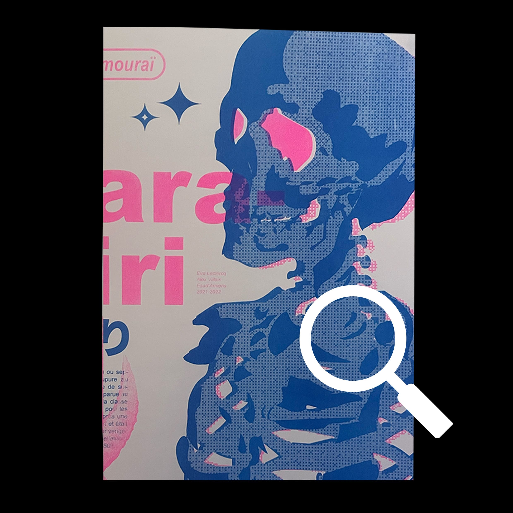

Risographie
Demande:
Création d'un visuel en Risographie avec un camarade de classe.
Request:
Creation of a visual in Risography with a classmate.
Hara-Kiri:
Pour constituer ce visuel, j'étais avec Eva LECLERCQ. Nous avons décidé de partir sur un univers japonais, ici sur le sujet du Hara-Kiri. Entre une utilisation du Bitmap, du tracé vectoriel et de la création d'une composition ordonnée, est né ce visuel.


